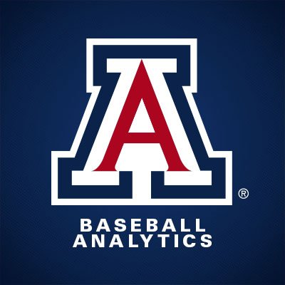
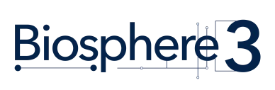

About
I build AI systems that survive in production, not just the demo.
I learned that the hard way as a Data Engineer at LTIMindtree on the Honeywell account. I wrote a Python migration accelerator that parsed 2,400+ job flows out of Airflow and into Control-M, retired the legacy servers underneath them, and cut roughly $80,000 in annual infrastructure cost. I rebuilt brittle time-based scheduling into event-driven pipelines, and shrank a 7-hour metadata job to 2. Two years of that taught me how production data actually behaves: where it breaks, where it lies, and what it takes to make a system you can trust at scale.
Now I bring that engineering discipline to research. At the Deep Target NLP Lab at the University of Arizona, I build a 3D avatar AI therapist for children with autism, using LLMs and retrieval-augmented generation to read behavioral cues. I designed the NLP metrics behind it, Mean Length of Utterance, conversational turn-taking, cross-encoder similarity, and speech act classification, so the system can actually measure social reciprocity and emotional labeling instead of guessing at them.
That sits squarely in what drives me: the intersection of machine learning, natural language processing, and domains where better models translate into better human outcomes. I care about the full arc, from raw data to a deployable system someone relies on.
Most recently, I have been building analytics for Arizona Baseball, where I built a model to improve striking performance for batters and find hits per balls, surfacing the team's batting strategy for coaching staff. Sports data is messy, real-time, and high-stakes, which is exactly the kind of problem I like.
Explore the work below, and reach out if you are building something difficult.
Education
Having a good education and clear life goal, makes me inevitably strong in my career path. All my educational details have been listed below.
Master of Science
2024 - 2026
University of Arizona
Tucson, Arizona, US
- CGPA: 4.0/4.0
- Course: Data Science
Bachelor of Engineering
2018 - 2022
Kumaraguru College of Technology
Coimbatore, Tamil Nadu, India
- CGPA: 8.2/10
- Course: Mechatronics Engineering
Experience
My professional journey and work experience that has shaped my career and expertise.

Data Scientist
Jan 2026 - May 2026
- Engineered a dual-stage XGBoost defensive modeling pipeline in R that ingests raw TrackMan tracking data, predicts play-out probability, and computes Outs Above Average (OAA) for infield and outfield positions, translating model outputs into position-level defensive value and runs-saved estimates that inform roster construction and lineup decisions.
- Developed a pitcher "Stuff+" analytics engine in R using expected run value (xRV) modeling across pitch types, handedness splits, and full arsenal profiles, producing normalized performance indices that benchmark Arizona pitchers against Division I baselines and surface arsenal strengths for coaching staff.
- Architected and deployed a player workload monitoring dashboard in R Shiny, building automated VALD API pipelines (Dynamo and ForceDecks) with end-to-end ETL workflows and interactive trend visualizations that track strength, force production, and recovery patterns across the roster to support workload management and injury prevention.
- Built hitter performance intelligence tools in R featuring rolling-average trend modeling, spray-chart visualization, and plate-discipline segmentation, enabling coaches to monitor swing quality, batted-ball outcomes, and performance shifts by pitcher handedness over the course of a season.
- Built a ~3K-line automated reporting framework that computes advanced KPIs (xAVG/xOBP/xSLG, CSW%, Chase%, Whiff%, in-zone miss rate, fielding metrics) and standardizes outputs for coaches, analysts, and player-development staff.
- Delivered decision-support assets for team operations by creating player-level and team-level leaderboard tables (split by handedness/situational context), improving speed and consistency of scouting and development insights.

AI Engineer
Jan 2026 - May 2026
- Fine-tuned small language models on curated biosphere and ecological research corpora using LoRA and adapter-based techniques, improving domain reasoning and reducing hallucinations in AI responses
- Designed and implemented a Retrieval-Augmented Generation (RAG) architecture to enable natural-language querying over multimodal ecological datasets
- Built a vectorized embedding pipeline for efficient semantic retrieval of scientific papers, sensor logs, and metadata, achieving high-precision knowledge retrieval
- Engineered end-to-end data pipelines for structured and unstructured biosphere datasets, including preprocessing, chunking, embedding generation, and metadata enrichment to optimize AI training and inference
- Developed distributed small language model inference infrastructure for low-latency, energy-efficient AI deployment in research environments
- Implemented hybrid search strategies combining semantic and keyword retrieval with reranking, improving relevance and grounding of AI-generated answers
- Constructed vector database and knowledge graph frameworks to support real-time AI queries on large-scale ecological datasets
- Prioritized compute-efficient fine-tuning and inference strategies, reducing reliance on large cloud LLMs while maintaining high scientific accuracy
Data Science Extern
Aug 2025 - May 2026
- Built end-to-end ETL pipelines in PySpark and SQL, applying CTEs, window functions, and indexing for efficient transformation on AWS (S3, EC2) and Databricks, then loaded curated data into Snowflake to centralize CMS Medicare claims and ACS social-determinants-of-health (SDOH) datasets into a single analytics-ready source.
- Standardized and reconciled 1M+ records across heterogeneous source schemas, resolving inconsistent county and provider identifiers and harmonizing measurement units, which reduced manual data processing by 40% and established a repeatable ingestion workflow.
- Engineered a Python and SQL data-modeling framework with automated validation, anomaly detection, and schema checks, producing regression-ready tables that powered OLS models (R squared = 0.93) for county-level demand and access analysis.
- Delivered automated county-level KPIs (discharges per 1,000 population) and interactive Power BI dashboards covering patient volume, referral patterns, and surgical encounters, giving clinical and strategy stakeholders a self-serve view of utilization across geographies.
- Translated the modeling and dashboard outputs into an equity-driven service expansion analysis, identifying under-served counties and informing data-backed recommendations for where Banner Health could extend access.
Graduate Researcher
Aug 2025 - May 2026
- Designed and developed a novel 3D animated AI therapist for children with autism, architecting a real-time conversational system that pairs large language models with Retrieval-Augmented Generation (RAG) over a curated clinical knowledge base, so the avatar's responses stay grounded in evidence-based therapeutic practice rather than free-form generation; the animated avatar delivers expressive, child-facing interactions intended to support and extend therapist-led intervention sessions.
- Built the behavioral-analysis layer that lets the system read and classify behavioral cues during a session, applying NLP techniques to interpret a child's language and interaction patterns in real time and to adapt the avatar's conversational strategy, turning each exchange into structured signal that clinicians can review rather than unmeasured back-and-forth.
- Engineered a custom evaluation framework, the core research novelty of the project, to rigorously quantify the therapist's performance using purpose-built NLP metrics: Mean Length of Utterance (MLU) and conversational turn-taking to track patient progress and engagement over time, and Cross-Encoder Similarity plus Speech Act Classification to assess the AI's ability to maintain social reciprocity and the accuracy of its emotional labeling, giving the lab a reproducible, quantitative standard for measuring an inherently qualitative clinical interaction.
- Partnered iteratively with clinicians throughout development, translating domain-specific feedback on autism behavioral patterns into concrete algorithmic improvements to the avatar's behavioral-analysis logic and response generation, and incorporating multimodal feedback from real-world therapy sessions so each iteration was validated against actual clinical practice rather than synthetic benchmarks alone.
- Delivered the working system live to clinicians and program funders, demonstrating the avatar in action alongside the evaluation framework's metrics, which bridged the gap between an NLP research prototype and a credible clinical-support tool and positioned the work for continued research investment.
Graduate Student Researcher
Jan 2025 - Dec 2025
- Architected a Hierarchical Reinforcement Learning (HRL) framework by integrating Transformer-based change-point detection (CPD) into the Option-Critic architecture, effectively automating subgoal discovery and enabling structured trajectory segmentation for interpretable policy generation
- Optimized intra-option learning and diversity by supervising agents with CPD-aligned signals and physics-constrained interventions, utilizing uncertainty-based reward shaping to improve termination accuracy and robust control in continuous action spaces
- Engineered a multi-level policy learning system (integrating DEX and BlackDROPS algorithms) for Surgical Robotics within SurRoL and MetaWorld environments, achieving 3-5x greater sample efficiency over DDPG baselines and 85% improvement in task completion rates
Data Engineer
Jul 2022 - Jul 2024
- Architected scalable ETL/ELT pipelines using Informatica Intelligent Cloud Services (IICS) and Snowflake on Azure Data Lake Storage (ADLS), collaborating with architects to eliminate redundant compute tasks and redesign workflows, which optimized resource utilization and delivered $90,000+ in combined annual cost reductions
- Modernized enterprise orchestration by refactoring scheduling logic from time-based dependencies to event-based triggers in Control-M, utilizing Rule-Based and Periodic Calendars to manage complex EDW interdependencies, ensuring data completeness and fault tolerance across critical data models
- Engineered a Python-based migration accelerator to automate the transition of 2400+ job flows from Apache Airflow to BMC Control-M, parsing DAGs into optimized SQL queries within a standard ETL framework; this initiative successfully decommissioned legacy servers, resulting in $80,000 in annual infrastructure savings and a 50% boost in deployment efficiency
- Developed and deployed automated data quality frameworks involving comprehensive profiling, cleansing, and validation of Stored Procedures and Materialized Views, achieving a 90% reduction in manual intervention and accelerating the release cycle for validated data assets by 20% via custom Python automation scripts
Projects
{kind=link}
{kind=link}
{kind=link}
{kind=link}
{kind=link}
{kind=link}
Expertise
Technical skills and tools I work with across different domains.
Programming & Development
Programming:
Python, SQL, R
Frameworks:
TensorFlow, PyTorch, Scikit-learn, Keras, OpenCV, FastAPI, spaCy, ONNX
Web Development:
Flask, React, Streamlit, RESTful APIs, Microservices
APIs & Integration:
JWT, OAuth2, Microsoft Graph API, LangChain, HuggingFace, Google Maps/Places APIs, Stripe Connect, OpenAI API, Google Gemini API, Anthropic Claude API
Cloud & MLOps
ETL Tools:
Informatica Power center, Apache Airflow, Azure ADF, Control-M, Hadoop and Pyspark, Docker, Kubernetes
Analytics & Cloud Tools:
PowerBI, Tableau, AWS (S3, Lambda, Redshift), Snowflake, IICS
Data Management
Databases:
SQL, NoSQL, MongoDB, Chroma DB, FAISS, PostgreSQL, PostGIS, Vector Databases
Visualization & BI:
Power BI, Tableau, Excel, Interactive heatmaps, Matplotlib, Seaborn, Plotly, Dash, Streamlit, Gradio
ETL & Processing:
PySpark, Dask, ETL pipelines, SQL-driven data pipelines, Spark
Search & Retrieval:
Marqo AI, Solr, BM25 variants, Sparse retrieval algorithms, RAG tools, Embedding Models, Semantic Search, Document Retrieval, Knowledge Graphs
Data Science & ML
Analytical & Statistical Techniques:
Data Mining, Predictive Modelling, Pattern Recognition, Kalman Filters, RAG tools
Theoretical Concepts:
Data warehousing and Data Modeling, Machine Learning concepts, Data Science
ML Development & Concepts:
LLM, Deep Learning, Timeseries Forecasting, Hyperparameter Tuning, Torch Vision, NLP
Frameworks and Libraries:
NumPy, Pandas, Scikit-Learn, Seaborn, Matplotlib, SciPy, Keras, TensorFlow, NLTK
Additional Tools & Platforms
Version Control:
Git, GitHub, Azure DevOps, GitHub Actions
Development:
Jupyter, VS Code, PyCharm, MATLAB, Simulink, MetaMask/Truffle (Ethereum), NLTK, Pandas, NumPy, spaCy, Transformers, Haystack
Research:
RL, RLHF, Option Critic, Offline Reinforcement Learning, Multi-Agent Reinforcement Learning, Hierarchical Reinforcement Learning, Meta-Reinforcement Learning, Reward Shaping & Reward Learning, Applied NLP, Text preprocessing, RAG, transformer fine-tuning
Applied NLP:
Text preprocessing, TF-IDF & embeddings, sentiment & multi-label classification, NER, topic modeling, transformer fine-tuning (BERT, RoBERTa), Hugging Face, spaCy, evaluation using Micro/Macro F1, and end-to-end NLP pipeline development
Contact
Making contact with another person was the greatest revolution of Human technologies which led us to here. Likewise our mode of contact would also bring about a major occasional moment between our connection. Inorder to contact me, please use the details mentioned below or connect me with social media links given above.
Location:
Tucson, Arizona, United States
Email:
findhemanath@gmail.com
Call:
+1 520 390 6563